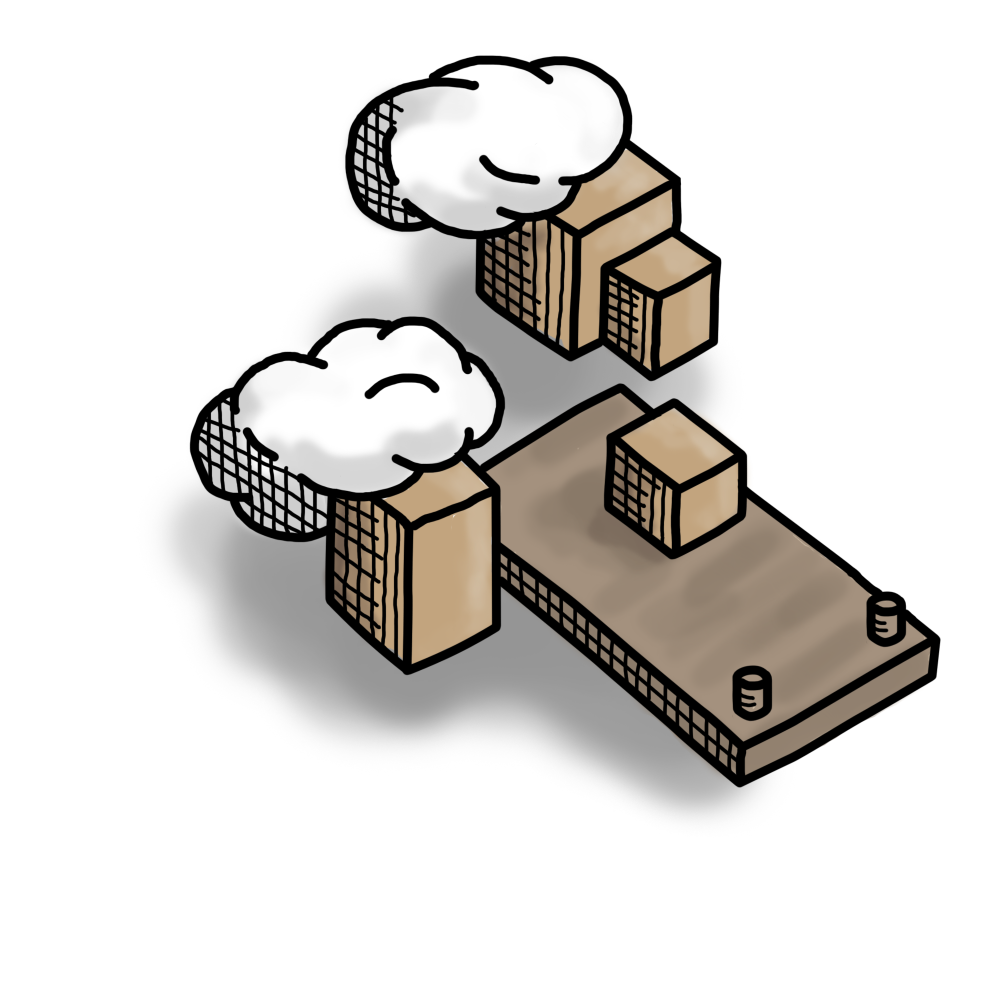

3.500 dm-Märkte
1.900 Deutschland
1.600 Österreich & verbundene Länder
1.200.000 App Installationen
iOS & Android
1.500.000 Couponing-Requests
pro Tag14 Microservices
bilden das Couponing-BackendEntstehung
Monolith
Microservices
bei dm
Der erste PAC
Microservice
Lessons Learned

Ausblick
Fazit
Warum sind wir hier?
Agiler Entwicklungsprozess
- Iterative Auslieferung
- Kontinuierlicher Feedbackzyklus
- Ausrichtung Produktvision
Hoher Automatisierungsgrad
durch "neue" Technologien
- Spring Boot
- systemD
- Docker
- Kubernetes
Das Team
PAC
Systemkontext
Voraussetzungen

Modularisierung
Und täglich grüßt...
- die Wartbarkeit
- die Erweiterbarkeit
Entstehung
Monolith
Microservices
bei dm
Der erste PAC
Microservice
Lessons Learned
Ausblick
Fazit
Die ersten Microservices bei dm
Homepage/Shop
Startschuss der Microservice Architektur bei dm2 Monolithen
Spring Cloud
Umsetzung der Microservice Architektur PatternsService Discovery
Clientside Loadbalancing
API Gateway
Circuitbreaker
Eine schlankere Infrastruktur
Entstehung
Monolith
Microservices
bei dm
Der erste PAC
Microservice
Lessons Learned
Ausblick
Fazit
Microservices bei PAC
10 Module
Größe des Monolithen vor Migrationdm Glückskind App
Erster Usecase für PAC MicroserviceMigration des Moduls
End 2 End Tests
Geben Sicherheit… sind aber selbst schwer zu maintainenInfrastruktur
Mit 10 WTFs/Minute unterwegsMicroservices bei PAC
Der erste Microservice steht
Aber…
Man fühlt sich etwas wie im BlindflugMetrics
ELK, Actuator, Telegraf, InfluxDB, Grafana
Einer ist keiner
Immer mehr Microservices entestehen
Bedeutung des Monolithen sinkt
Finetuning
Entstehung
Monolith
Microservices
bei dm
Der erste PAC
Microservice
Lessons Learned
Ausblick
Fazit
Lessons Learned (tech.)
API Gateway Pattern
Dependency Hell
408
Request Timeout
Lessons Learned (org.)
Neues Team für OnlineShop
DevOps für den Bereich

DevOps Kultur
Benefits
Mehr Macht den Devs
Unabhängige Skalierung
Unabhängiges Deployment
Probleme schneller lokalisierbar
Entstehung
Monolith
Microservices
bei dm
Der erste PAC
Microservice
Lessons Learned
Ausblick
Fazit